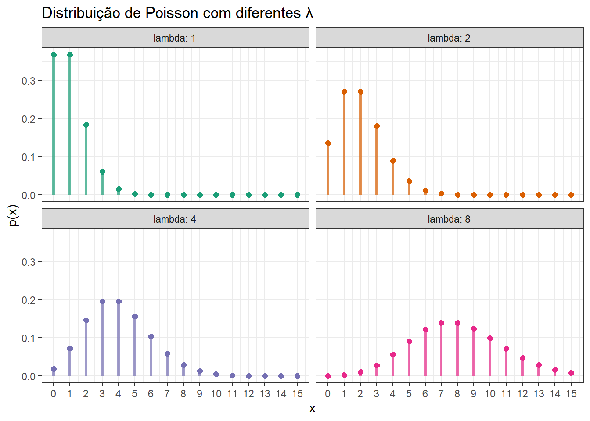
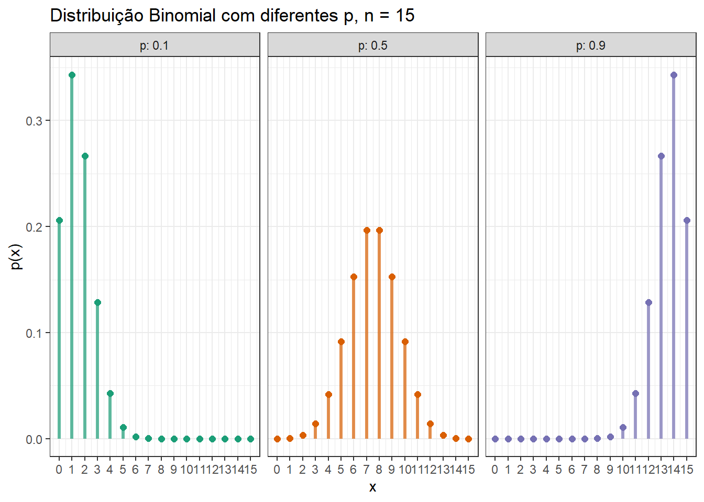

Distribuições Importantes para o Controle Estatístico de Qualidade
Author
Robson Bruno Dutra Pereira
Distribuições discretas
Uma distribuição discreta é aquela que só aceita certos valores, por exemplo números inteiros, \(x \in \mathbb{Z}\). Por exemplo a distribuição que rege o número de defeitos em calças jeans seria discreta.
A probabilidade de uma variável aleatória (va) discreta \(x\) assumir o valor \(x_i\) é
\[
P\{x=x_i\}=p(x_i).
\]
A média \(\mu\) de uma va discreta é definida como:
\[
\mu= \sum_{i=1}^\infty x_ip(x_i)m,
\]
sendo que, caso os \(N\) valores possíveis para a va tenham probabilidade igual, \(p(x_i)=1/N\), então:
\[
\mu = \frac{\sum_{i=1}^N x_i}{N}.
\]
Já a variância de uma va discreta pode ser calculada como
O problema da variância é que ela apresenta unidade de medida igual ao quadrado da unidade de medida da va em estudo, sendo, portanto, de difícil interpretação. Logo o desvio-padrão, \(\sigma=\sqrt{\sigma^2}\), pode ser uma medida de dispersão útil uma vez que está na mesma unidade de medida da va.
Distribuição Poisson
Seja um fenômeno que ocorre em base unitária, como área, volume, tempo, comprimento. Este fenômeno pode ser descrito pela distribuição Poisson. A distribuição Poisson tem parâmetro \(\lambda\) e função densidade de probabilidade conforme segue.
Na Poisson, \(\lambda >0\), \(\mu=\lambda\) e \(\sigma^2=\lambda\). A seguir pode-se observar o gráfico da função densidade de probabilidade da Poisson com distintos valores de \(\lambda\).
library(ggplot2)theme_set(theme_bw())library(dplyr)# Definir valores de lambdalambdas <-c(1, 2, 4, 8)# Criar os dadospoisson_data <-expand.grid(x =0:15, lambda = lambdas) %>%mutate(prob =dpois(x, lambda),lambda =factor(lambda))# Plotar com linhas verticaisggplot(poisson_data, aes(x = x, color = lambda)) +geom_segment(aes(xend = x, y =0, yend = prob), linewidth =1.2, alpha =0.7) +geom_point(aes(y = prob), size =2) +facet_wrap(~ lambda, ncol =2, labeller ="label_both") +labs(title ="Distribuição de Poisson com diferentes λ",x ="x",y ="p(x)",color ="λ") +scale_x_continuous(breaks =0:15) +scale_color_brewer(palette ="Dark2") +theme(legend.position ="none") # Remover legenda pois já temos os facets

A distribuição Poisson tem ampla aplicação em Controle Estatístico para monitorar defeitos ou não conformidades que ocorrem em unidade de produto.
Seja o número de defeitos que ocorre por metro de tecido produzido distribuído por uma Poisson com \(\lambda=4\). A probabilidade de selecionar um metro de tecido aleatório que contenha no máximo dois defeitos seria.
Seja um processo de produção de botas de couro. O couro adivindo de um fornecedor apresenta em média 10 defeitos por metro quadrado. Qual a probabilidade de que sejam observados no máximo 5 defeitos por metro quadrado?
Sejam \(n\) provas independentes. Quando o resultado de tais provas resulta em “sucesso” ou “fracasso”, tais provas são ditas provas Bernoulli. Se a probabilidade de sucesso, \(p\), é constante, então o número de sucessos, \(x\), em \(n\) provas Bernoulli segue a distribuição Binomial com parâmetros \(n\) e \(p\), com função densidade de probabilidade conforme segue:
\[
p(x)=\begin{pmatrix}
n \\
x
\end{pmatrix} p^x(1-p)^{(n-x)},
\]
com \(n\geq0\), \(\mu=np\) e \(\sigma^2=np(1-p)\). A seguir pode-se observar a função densidade de probabilidade da distribuição Binomial com distintos valores de \(p\) para \(n=15\).
# Definir valores de pp_ <-c(0.1, 0.5, 0.9)# Criar os dadosbin_data <-expand.grid(x =0:15, p = p_) %>%mutate(prob =dbinom(x, 15, p),p =factor(p))# Plotar com linhas verticaisggplot(bin_data, aes(x = x, color = p)) +geom_segment(aes(xend = x, y =0, yend = prob), linewidth =1.2, alpha =0.7) +geom_point(aes(y = prob), size =2) +facet_wrap(~ p, ncol =3, labeller ="label_both") +labs(title ="Distribuição Binomial com diferentes p, n = 15",x ="x",y ="p(x)",color ="p") +scale_x_continuous(breaks =0:15) +scale_color_brewer(palette ="Dark2") +theme(legend.position ="none") # Remover legenda pois já temos os facets

A seguir pode-se observar a função densidade de probabilidade da distribuição Binomial com distintos valores de \(n\) para \(p=0,2\).
# Definir valores de pn_ <-c(5, 10, 15)# Criar os dadosbin_data <-expand.grid(x =0:15, n = n_) %>%mutate(prob =dbinom(x, n, 0.2),n =factor(n))# Plotar com linhas verticaisggplot(bin_data, aes(x = x, color = n)) +geom_segment(aes(xend = x, y =0, yend = prob), linewidth =1.2, alpha =0.7) +geom_point(aes(y = prob), size =2) +facet_wrap(~ n, ncol =3, labeller ="label_both") +labs(title ="Distribuição Binomial com diferentes n, p = 0,20",x ="x",y ="p(x)",color ="n") +scale_x_continuous(breaks =0:15) +scale_color_brewer(palette ="Dark2") +theme(legend.position ="none") # Remover legenda pois já temos os facets
Qual a probabilidade de jogar uma moeda para o ar três vezes e aparecer cara uma vez?
Em controle estatístico de qualidade \(p\) pode representar a fração de produtos defeituosos ou não conformes na população. Nestes casos \(x\) consiste no número de itens defeituosos encontrados em uma amostra de \(n\) itens.
Seja um processo de produção de eixos para amortecedores. Sabendo que a probabilidade de um eixo apresentar defeito ou, em outras palavras, não atender as especificações, é igual a 0,04, qual a probabilidade de o número de itens defeituosos ser menor ou igual a 5 unidades em uma amostra de 100 eixos?
\[
p(x\leq5)=\sum_{x=0}^5 \begin{pmatrix}
100 \\
x
\end{pmatrix} 0,04^x0,96^{100-x} =0,7884
\]
Resolução dos exercícios via R
Seja o número de defeitos que ocorre por metro de tecido produzido distribuído por uma Poisson com \(\lambda=5\). Qual a probabilidade de selecionar um metro de tecido aleatório que contenha no máximo três defeitos?
Usando a função para obtenção da probabilidade pontual, \(p(x=x_i)\).
dpois(0,5)+dpois(1,5)+dpois(2,5)+dpois(3,5)
[1] 0.2650259
Usando a função para obtenção da probabilidade acumulada, \(p(x\leq x_i)\).
ppois(3,5)
[1] 0.2650259
Seja um processo de produção de peças de estanho com \(\lambda=10\). Qual a probabilidade de um cliente comprar uma peça que apresente no máximo 5 defeitos?
ppois(5,10)
[1] 0.06708596
Qual a probabilidade de jogar um dado para o ar cinco vezes e dar 6 duas vezes?
choose(5,2)*(1/6)^2*(5/6)^3
[1] 0.160751
dbinom(2,5,1/6)
[1] 0.160751
Qual a probabilidade de jogar um dado para o ar cinco vezes e aparecer 6 no máximo duas vezes?
Seja um processo de produção de eixos para amortecedores. Sabendo que a probabilidade de um eixo apresentar defeito ou, em outras palavras, não atender as especificações, é igual a 0,04, qual a probabilidade do número de itens defeituosos ser menor ou igual a 5 unidades em uma amostra de 100 eixos?